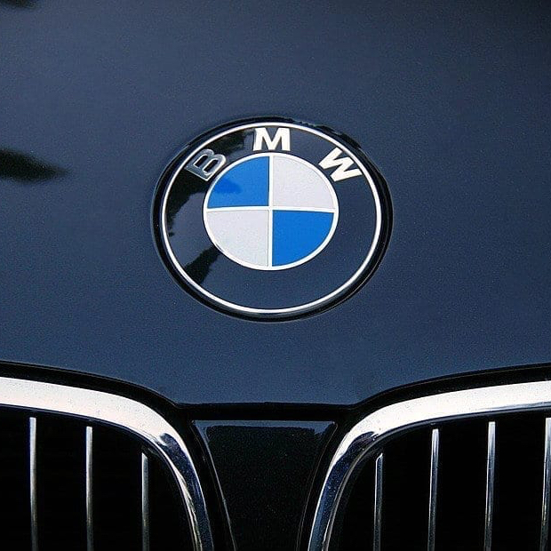

BMW
BMW (siglas en alemán de: Bayerische Motoren Werke, «Fábricas de motores bávara») es un fabricante alemán de automóviles de lujo y motocicletas, cuya sede se encuentra en Múnich. Sus subsidiarias son Mini, Rolls-Royce, y BMW Bank. BMW es el líder mundial en ventas entre los fabricantes de gama alta, compite principalmente con Audi, Volvo, Lexus y Mercedes-Benz, entre otros vehículos de gama alta.
MERCEDES
Mercedes-Benz es una empresa alemana fabricante de vehículos de lujo, división de la compañía Daimler AG (anteriormente conocida como Daimler-Benz y DaimlerChrysler). La marca es reconocida por sus vehículos de lujo, autobuses y camiones. Su eslogan es The best or nothing ("Lo mejor o nada").
Los más cercanos competidores de Mercedes-Benz en el mercado actual de coches de gama alta son Audi, Volvo, Alfa Romeo, BMW, Lincoln, Cadillac, Infiniti, Jaguar, Lexus, Acura. La famosa estrella de tres puntas, diseñada por Gottlieb Daimler, simboliza la capacidad de sus motores para emplearlos en tierra, mar y aire.
PORSCHE

Dr. Ing. h.c. F. Porsche AG, normalmente abreviado como Porsche, es un fabricante de automóviles alemán especializado en automóviles deportivos lujosos, de alta gama, SUV y sedanes. Porsche AG es propiedad del Grupo Volkswagen, que a su vez es propiedad mayoritaria de Porsche Automóvil Holding SE. Fue fundada en Stuttgart en 1931 por Ferdinand Porsche y su hijo Ferdinand Anton Ernst Porsche
AUDI
August Horch (1868-1951), uno de los pioneros de la industria automovilística alemana, fundó en Colonia (Alemania) la empresa de autos Horch en 1899, cuyo primer automóvil comenzó a circular por vías públicas en 1901.
Audi es una empresa multinacional alemana fabricante de automóviles de alta gama, de lujo y deportivos. Su sede central se encuentra en Ingolstadt, Baviera y forma parte desde 1965 del Grupo Volkswagen.